HISTORY
1975-1981: Foundation and early years
On June 9, 1975, the New Era Educational Institute (NEEI) was established in Quiapo, Manila. Housed in the Iglesia Ni Cristo Development Center at 499 Carlos Palanca Street, it initially provided secondary education to 466 students with a faculty of 23 teachers and proudly held its first high school graduation on March 19, 1976, with 30 pioneering students.
NEEI was formally recognized as a private, non-stock, non-profit, non-sectarian institution on June 6, 1977. The year 1978 marked a major milestone as the institution expanded into higher education, offering twelve college programs, including AB Mass Communication and BS Civil Engineering.
During the inauguration of the New Era Evangelical College (NEEC) on June 17, 1978, at its campus along Commonwealth Avenue, Quezon City, Brother Erano Manalo solemnly declared the institution's prime purpose: to glorify God by upholding His words, fostering love and harmony, and maintaining excellence, order, and discipline.
In 1979, the foundation was further strengthened with the appointment of Justice Nicolas P. Lapena Jr. as the institution's first president.
1981-1995: Growth as New Era College (NEC)
In 1981, the school officially became New Era College (NEC), with expanded academic programs. In 1983, it introduced its first graduate program-the Master of Arts in College Teaching (MACT).
To accommodate its growing community, a permanent campus was inaugurated by Brother Eraño Manalo on May 10, 1986, in Diliman, Quezon City. In 1991, the Elementary and High School Departments were relocated to new buildings within the campus to support NEC's expansion.
By the mid-1990s, NEC had begun extending its reach beyond Metro Manila. On June 20, 1994, it inaugurated its first branch campus in Pampanga, followed shortly by the opening of the General Santos City campus in South Cotabato on July 11, 1994.
1995-2019: Transition to New Era University (NEU)
The year 1995 marked a historic milestone for the institution as New Era College was officially granted university status, becoming New Era University (NEU) on June 30. This transition signified more than a change in name-it ushered in an era of academic ex-pansion, institutional growth, and global collaboration. In 2000, NEU opened its College of Law, followed by the launch of Special Education (SPED) programs and the College of Nursing in 2003.
The University's growth also reached more regions in the Philippines. The NEU-Lipa City Branch in Batangas was inaugurated on May 5, 2000, and a new building was opened at NEU-Pampanga in 2002.
In 2009, when Brother Eduardo V. Manalo assumed office as the Executive Minister of the Church, he carried forward the mission of New Era University-drawing strength and inspiration from the legacy of his predecessor while leading the institution to even greater heights. In 2010, NEU embraced innovation by launching online learning through Vantage Education Management (VEM), paving the way for more flexible and accessible learning modalities. The following year, NEU opened its College of Music, enriching the school's commitment to holistic education.
On June 17, 2014, NEU inaugurated its Professional Schools Building. That same month, the NEU College of Law began offering its Juris Doctor program. The year 2014 also saw the launch of major academic units: the College of Medicine and the Colleges of Criminology, Communication, Accountancy, and Computer Studies.
In 2015, NEU celebrated its 40th anniversary, conducting that year's Commencement Exercises at the Philippine Arena in Ciudad de Victoria, Bocaue, Bulacan wherein it also conferred its first honorary degree (Honoris Causa). Then, in 2017, groundbreaking ceremonies were held for the NEU College of Agriculture in Baras, Rizal, marking the establishment of NEU's fourth branch campus. In the same year, Embrace Cafe (one of the four livelihood centers of the Church's Embrace Organization for the Differently Abled) became part of the NEU-SPED program, providing inclusive opportunities for those with special needs.
NEU's reach extended beyond Philippine shores when, in 2018, it became the first private university in the country to enter anto a collaboration agreement with Moscow State Institute for International Relations (MGIMO)-a globally recognized academic institution. On August 9, 2019, the NEU School of Management building was inaugurated along Central Avenue in Quezon City, becoming the new home of the College of Business Administration, the College of Accountancy, and the School of International
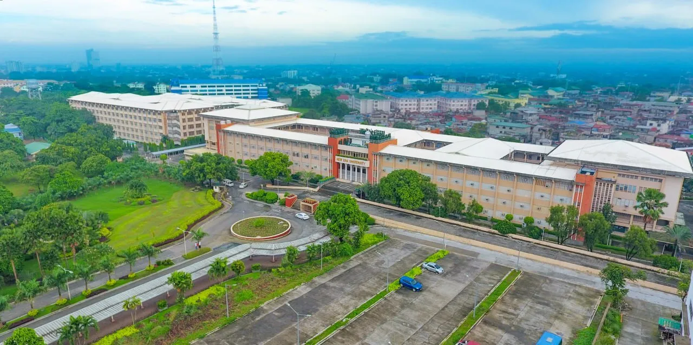
2020-Present: Innovation and global expansion
During the Covid-19 pandemic, NEU swiftly transitioned to full online learning through the NEU Virtual Learning Environment (NEUVLE) in 2020. This bold step not only safeguarded learning during uncertain times but also positioned the university as a leader in digital education in the Philippines.
In 2021, the university strengthened its global academic engagement with the establishment of the Russian Studies Center (RSC) and collaboration with the Foreign Policy Community of Indonesia (FPCI).
The year 2022 was marked by the graduation of the first batch of Bachelor of Science in Agriculture students. That year also saw the return of global academic visitors, as NEU welcomed international dignitaries. In cooperation with the Iglesia Ni Cristo Christian Family Organizations, it also launched three new educational programs: Applied Education in Various Media (AEVM); NEU - Special Task Force; and EVM research fellowship program.
Continuing its upward trajectory, NEU launched the China Studies Center in 2023. That same year, the university joyfully resumed face-to-face commencement exercises during its 48th graduation ceremony, after two years of conducting them virtually.
In 2024, NEU signed landmark academic agreements with the Far Eastern Federal University (FEFU) of Russia and NingboTech University of China. It also hosted the first-ever National Summit on Journalism, bringing together thought leaders and students from across the country.
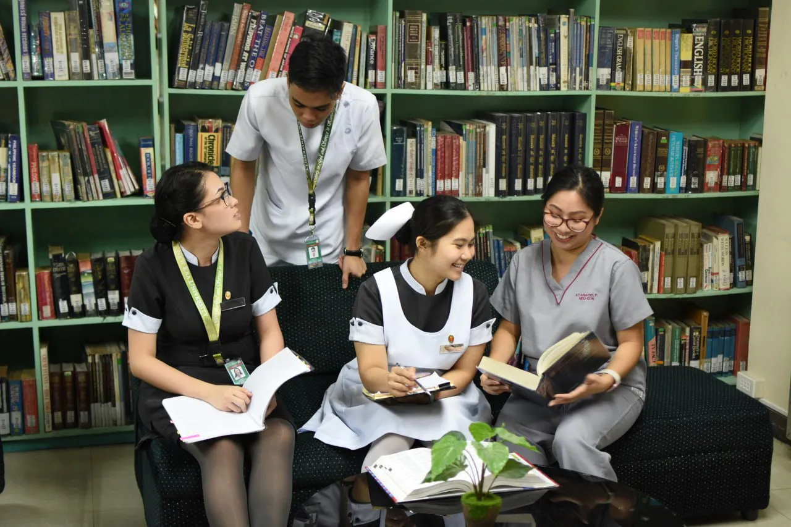
NEU@50: Honoring the golden years, embracing a brighter future
Under the visionary leadership of Brother Alberto R. Domingo Jr., NEU marks its 50th founding anniversary with the theme, "NEU@50: Celebrating the Golden Years of Enduring Faith, Love, and Hope" Upon his appointment as University President in February 2023, and later also as Chairman of the Board of Trustees, he spearheaded various initiatives leading to this historic milestone supported by the Vice Presidents: Brother Julian Meimban III (VP for Research), Brother Isaias B. Reyes II (VP for Administration), and Sister Baby Simonnette B. Leoncio (VP for Academic Affairs).
Among the key initiatives is the ambitious "50 Publications for the NEU 50th Anniversary" project, headed by Brother Jensen DG. Mañebog, in collaboration with the NEU Print and Publication Office under Brother Gem Josol. This endeavor led to the publication of over 50 scholarly and creative works by NEU faculty-authors.
Brother Domingo also oversaw the establishment of the NEU Museum in June 2024, under the curatorship of Brother Ezzard Gilbang, showcasing the university's legacy and cultural identity. Strengthening academic excellence, the university has forged global partnerships, attained high board exam passing rates, and hosted various significant events.
On June 13, 2025, as part of NEU's Golden Jubilee celebration, a special worship service was held at the Iglesia Ni Cristo Central Temple in Quezon City. Officiated by Brother Arnel A. Tumanan, the solemn gathering was attended by ministers, ministerial workers, faculty, and staff from the main campus and NEU branches in Pampanga, Lipa City, and Rizal, with the General Santos City Branch joining via video streaming. This was followed by the 50th Commencement Exercises and Anniversary Celebration on June 20, 2025 at the Philippine Arena, alongside the Alumni Homecoming. On September of that year, NEU became a local testing center for the Bar Examinations for the first time ever.
As NEU marks its Golden Jubilee, it stands as a living testament to what unwavering faith, steadfast dedication, and a deep sense of mission can accomplish. Now entering a new era-with the continued leadership of the Executive Minister, Brother Eduardo Manalo, and the dynamic guidance of the Church's Deputy Executive Minister, Brother Angelo Eraño V. Manalo-the University remains firmly rooted in its founding vision: to glorify our Almighty God and render selfless service to humanity.

Philosophy of Education

New Era University (NEU) is a private, non-stock, non-profit, non-sectarian educational institution established by the Iglesia Ni Cristo (INC). It is committed to the total development of man, helping him realize his worth as a person, and preparing him for a life of purpose, professional responsibility, and social-civic awareness as a truly productive member of the world community.
A Unique Christian Environment
NEU is a unique Christian environment that emphasizes not only academic excellence but also the development of character and values. It aims to develop graduates who are not only competent in their chosen fields but also God-fearing, disciplined, and service-oriented.
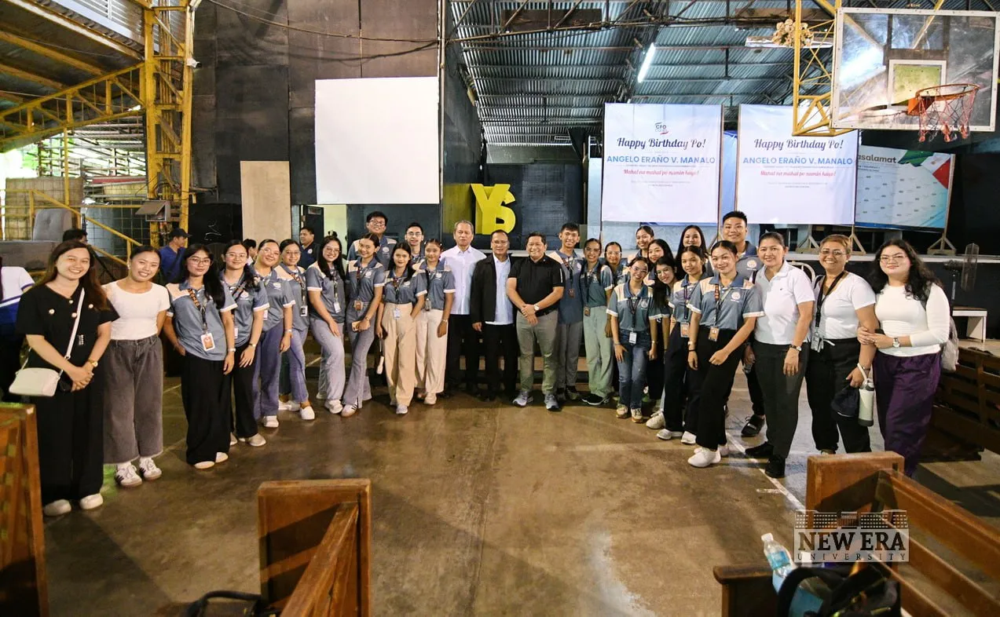
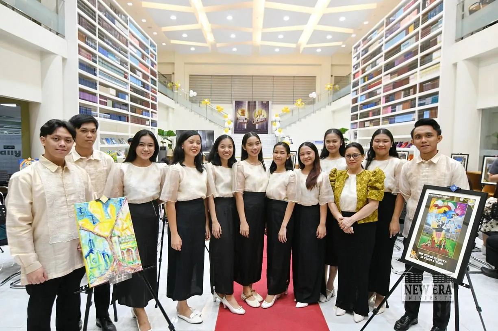
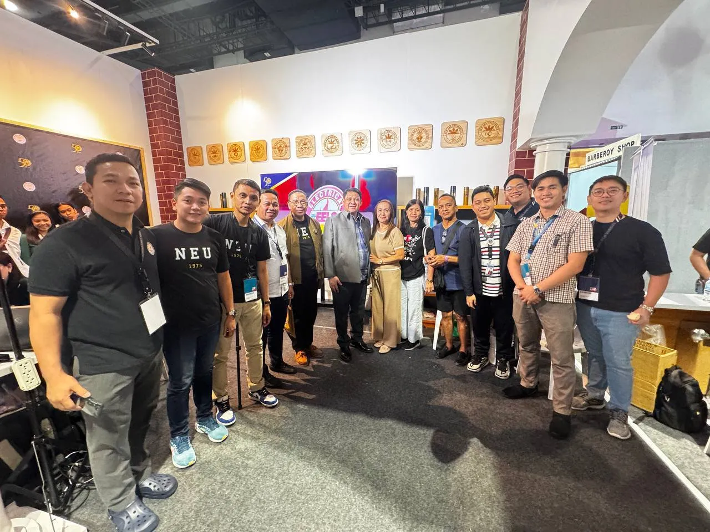
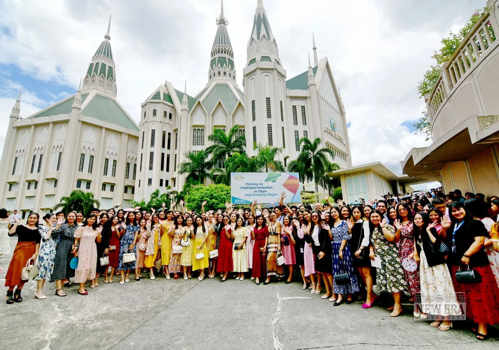
Academic Attributes
Guided by the University's Philosophy of Education, Vision, Mission, and Goals, NEU demonstrates its pursuit of academic and institutional excellence by:
- Producing God-fearing, courteous and disciplined professionals: Imparting graduates who are highly ethical in their development of man that will make them realize their worth as a person and be able to contribute to the progress of the world through a sense of integrity and godliness as they uphold the values as a productive member of the society.
- Developing versatile, knowledgeable, skilled, healthy, and productive citizens: Providing the highest standard of quality education as the students are capable of actively participating in various endeavors of the world through faith, having a sense of direction and dedication to their call.
- Providing local and international leadership: Ensuring the students and the alumni are equipped with the standard of excellence as a world-class university through local and global institutional development through the pursuit of world and significant innovations.
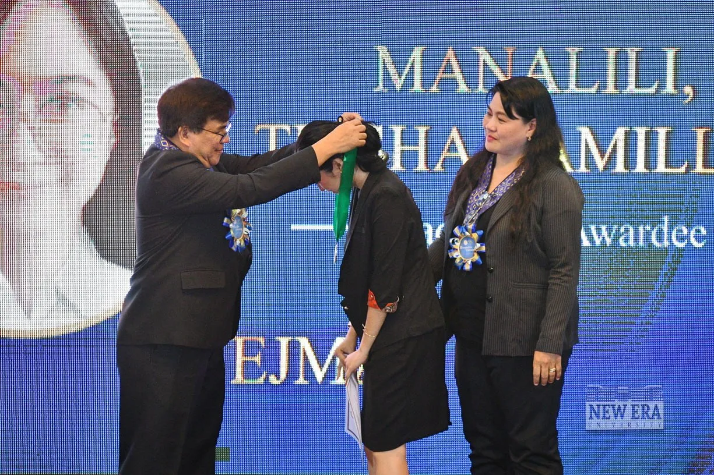
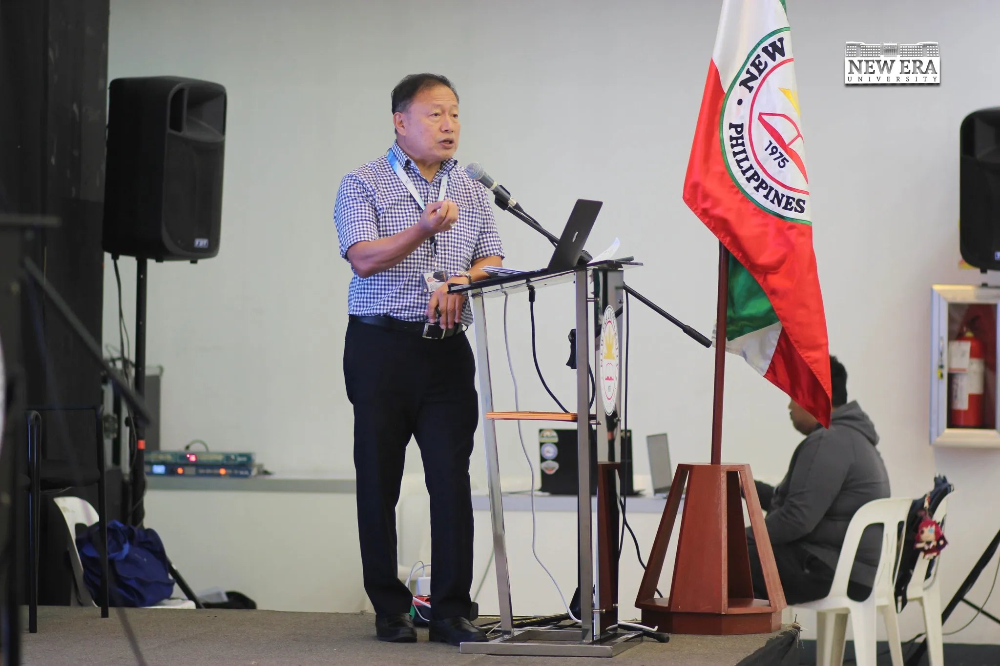
Vision, Mission, Goals
VISION
A world-class Institution of learning with a unique Christian culture of excellence, discipline, and service to humanity.
MISSION
Provide quality education anchored on Christian values with the prime purpose of bringing honor and glory to God.
GOALS
- Impart value-laden education to the total development of man.
- Offer curricula responsive to the needs of the time.
- Optimize learning through the adoption and utilization of appropriate instructional methods and resources.
- Propel institutional development through the conduct of useful and significant researches.
- Extend outreach services which promote self-help in the community.
- Promote access to non-conventional higher education and basic education programs.
- Develop servant leaders among staff, faculty members, and administrators.
- Produce God-fearing, competent, and disciplined graduates.
Our Core Values
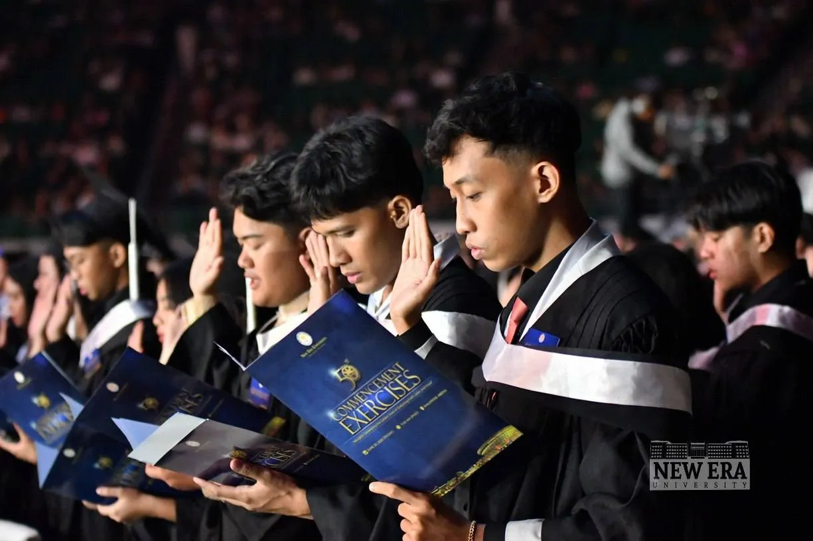
The NEU's core values are Excellence, Discipline and Service to Humanity.
Excellence that is rooted in the belief that all knowledge ultimately stems from a divine source, the pursuit of excellence at this university is not merely an academic endeavor but a spiritual imperative. Recognizing that God is the author of all truth and beauty, students and faculty are called to diligently cultivate their intellect and talents, striving for the highest standards in their scholarly pursuits, research, and creative expressions.
This commitment to excellence reflects a desire to honor God through the rigorous and faithful stewardship of the gifts of reason and understanding, aiming to uncover and articulate truths that reflect divine order and wisdom.
Discipline, in the context of "Godliness is the foundation of knowledge," is understood as a vital means to cultivate both intellectual rigor and moral character, essential for truly apprehending and applying knowledge. It encompasses not only the systematic and diligent application to academic studies, requiring focus, perseverance, and adherence to sound research principles, but also the self-mastery necessary to align one's will with divine principles.
This holistic discipline enables students to discern truth from falsehood, to resist intellectual complacency, and to develop the habits of mind and heart that foster genuine wisdom and a reverent approach to learning.
Service to Humanity that is flowing from the understanding that knowledge is a divine gift, service to humanity becomes the ultimate purpose for its acquisition and application. This university believes that true knowledge is not for personal aggrandizement but is given for the betterment of the world and the glory of God. Therefore, students are encouraged to utilize their God-given talents and acquired knowledge to address human needs, promote justice, and contribute to the well-being of communities, locally and globally.
This commitment to service is a tangible expression of love for one's neighbor, reflecting the divine call to be instruments of blessing and transformation in the world, embodying the truth that knowledge is fully realized when it serves a higher purpose beyond oneself.
The University Seal

The University seal bears identifiable images which put into visual symbols the institutional philosophy of New Era University.
The tricolored (green, white, red) circles surrounding the University seal symbolizes the University's association and is under the umbrella of the Church Administration of the Iglesia Ni Cristo that also serves as the one of the University's value of Providing Quality Education Anchored on Christian Values.
The rising sun signifies energy and a New Era that means a new beginning and being one of the top-rising universities in the Philippines.
The book signifies academics and excellence that is one of the core values of the university and its attributes of providing curricula responsive to the needs of time by optimizing learning through the adoption and utilization of appropriate instructional methods and resources and propel institutional development through the conduct of useful and significant researches.
THE NEU HYMN
Composed by: Prof. Joseph William Hollis
All hail fair new era
Forever dear to me
We are proud to sing
With cheers and glories
To thee our hopes
And dreams run crystal clear
Our faith beneath thy wings
Will forever be
Like the rising sun within thy seal
We'll shine and light the world with brilliancy
Our lord's command will obey seal
With his grace to all our victories
Hail to thee beloved alma mater
With pride we'll uphold thy name forever
With honor we'll march beneath thy banner
Thy golden flame will always remember
We pledge to thee eternal loyalty
We will win for thee more fame and glory
With fervent prayers to the almighty
We'll be united 'till eternity
Glory to god the almighty
And selfless service to humanity
FACILITIES
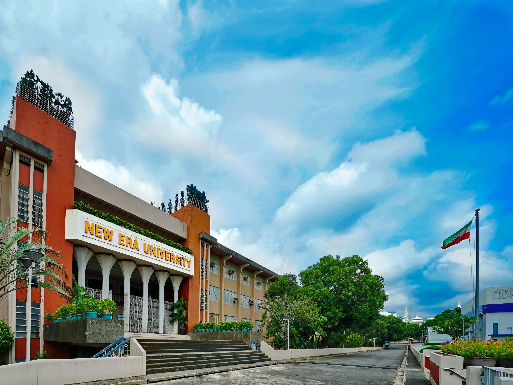
Main Building Annex
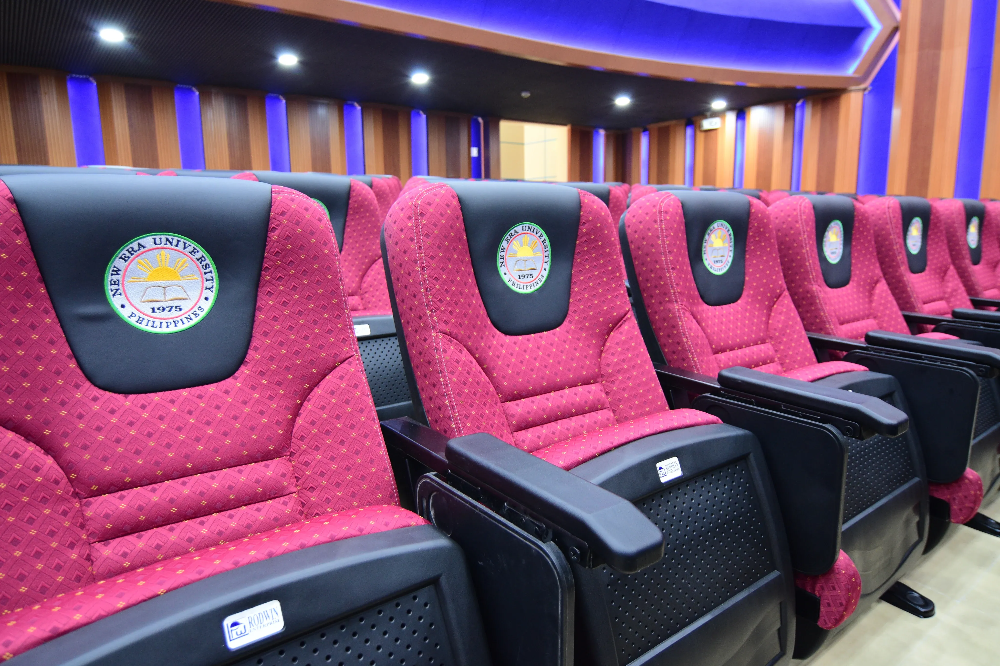
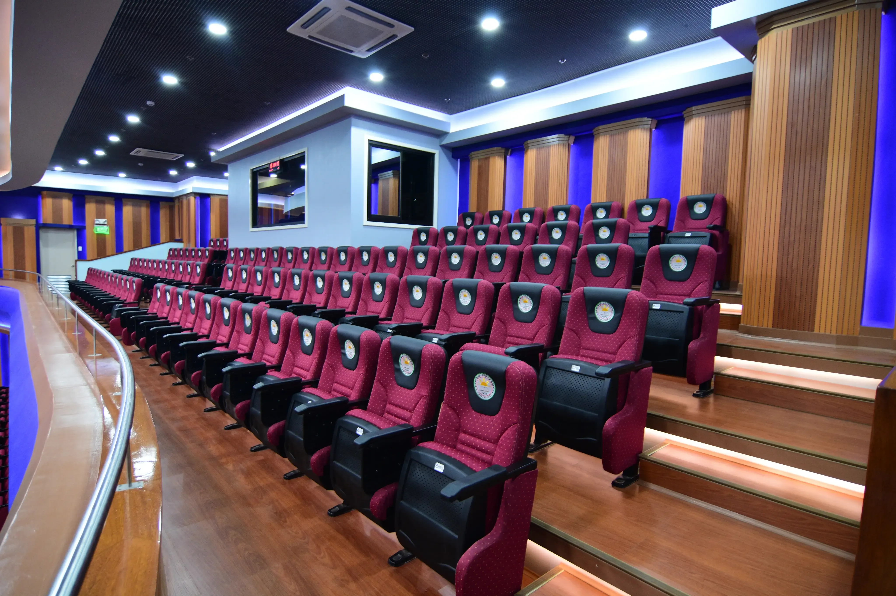
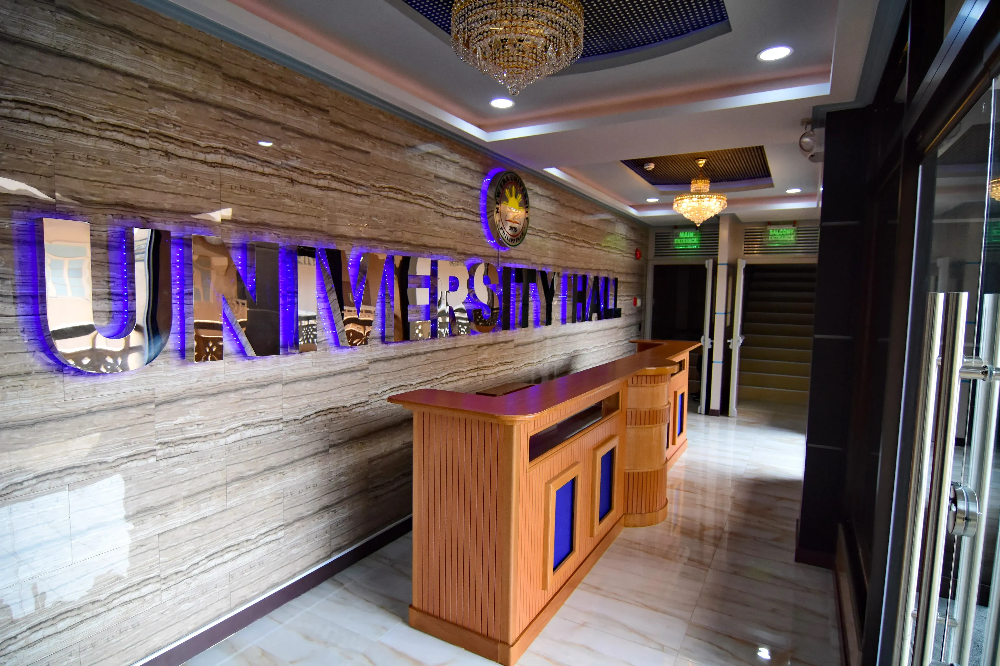
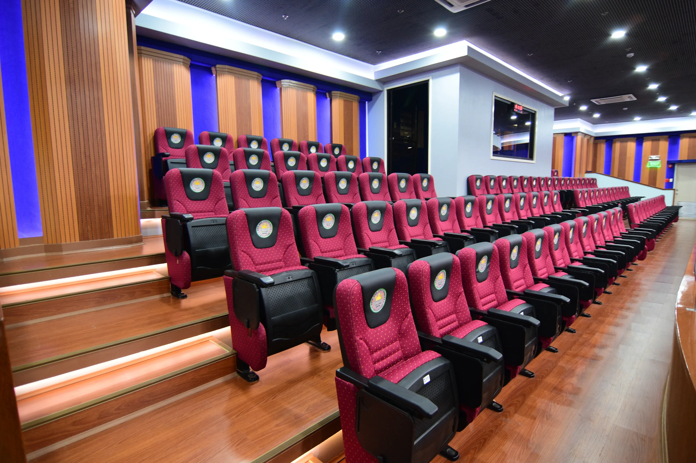
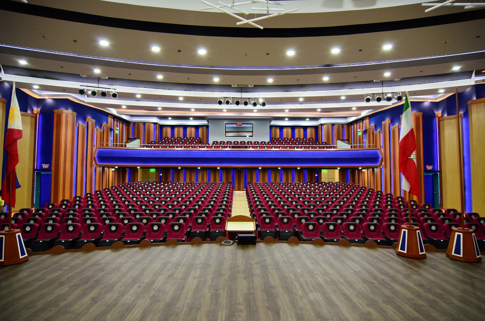
University Hall

Professional Schools Building
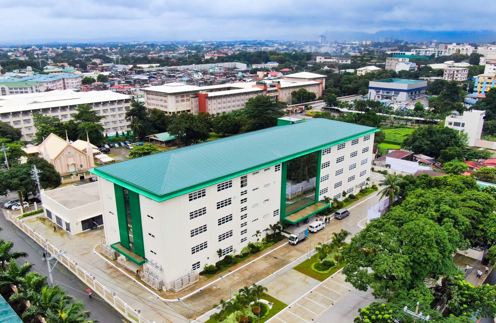
School of Management Building

Integrated School Building
AWARDS AND CITATIONS
Supreme Court of the Philippines (SC)
- Designated as one of the Local Testing Center for the September 2025 Bar Examinations
Commission on Higher Education (CHED)
- Excellence in Quality Assurance in Teacher Education (EQUATE) Awardee
Career Executive Service Board (CESB)
- Award Distinction for invaluable contribution, remarkable commitment, and active involvement through its partnership in administering the Nationwide Career Executive Service Written Examination (CESWE).
Philippine Association of Colleges and Universities Commission on Accreditation (PACUCOA)
LEVEL IV Accredited
- Bachelor of Science in Business Administration (BSBA)
- Bachelor in Elementary Education (BEEd)
- Bachelor of Secondary Education (BSEd)
- BA Communication
Association of Christian Schools, Colleges, and Universities (ACSCU-ACI) Accreditation Status
LEVEL III Accredited
- Doctor of Philosophy in Education (PhD) Program
- Master of Arts in Education (MAEd) Program
- Master in Business Administration (MBA) Program
LEVEL III Re-Accredited
- Elementary ProgramElementary Program
- Junior High School (JHS) Program